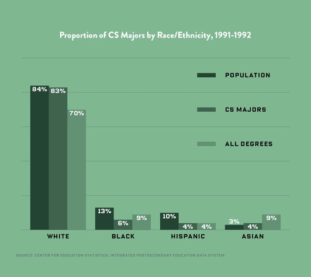
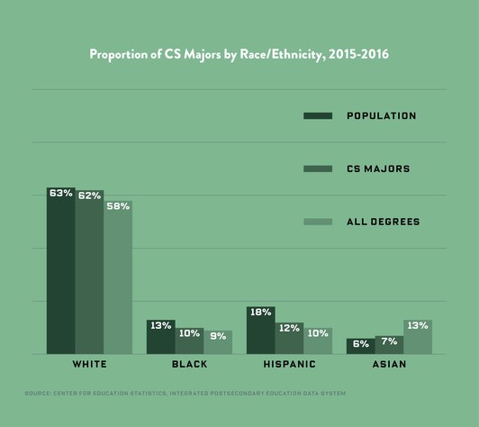

There is a big discrepancy in the percentage of minority workers in computer science compared to other jobs. Even compared to other STEM fields, there are much fewer percentages of black, hispanic, and women computer scientists. Even with a growing emphasis on making computer science more inclusive, the numbers have simply not increased as much as they should have.
 Statistics from Wired.com
A study done by the Pew Research Center in Washington D.C. surveyed thousands of STEM workers and was able to draw several key insights on the lives of minority workers in these fields.